¶1. O problema: quando o resultado engole a análise
Uma decisão penal precisa explicar mais do que o que causou alarme. Precisa mostrar qual acontecimento foi demonstrado, quem realizou um comportamento controlável, qual norma transforma esse comportamento em juridicamente relevante, se existe uma permissão e se a censura pessoal pode ser dirigida àquela pessoa. Sem essa separação, o resultado ocupa o lugar da conduta, a moralidade ocupa o lugar do tipo e a suspeita ocupa o lugar da prova.
“Crime” pode designar realidades diferentes. Pode ser um acontecimento social que provoca dano ou alarme, uma descrição legal ameaçada de pena, um ilícito reconhecido em decisão ou uma categoria dogmática usada para ordenar perguntas. Confundir esses sentidos produz conclusões apressadas.
Uma conduta moralmente repugnante pode não realizar um tipo penal. Uma conduta que corresponde formalmente a uma descrição legal pode ainda não superar todas as condições de imputação. Pode haver fato típico com antijuridicidade excluída. Pode haver injusto sem culpabilidade. Também pode haver um resultado que não seja atribuível porque não existiu comportamento humano controlável.
O primeiro gesto metodológico é, portanto, retardar o rótulo. “Houve morte” é uma descrição factual. “Houve homicídio típico” é uma conclusão tipológica. “Houve homicídio antijurídico” acrescenta outro juízo. “O agente pode ser culpado e punido” acrescenta ainda outro. A utilidade do conceito analítico está em conservar essas diferenças visíveis.
¶2. A forma da resposta: uma cascata com saídas
Teoria do Delito tem uma espinha única: uma cascata de filtros com pontos de saída. A pergunta inicial é se algo aconteceu de modo demonstrável. Depois se pergunta se houve conduta humana controlável, se essa conduta corresponde a um tipo, se o fato típico permanece contrário ao Direito e se é possível formular censura pessoal. Só depois se examina o que segue, inclusive a pena e seus limites.
![Diagrama: Algo ocorreu? · fato demonstrado → Houve conduta? · controle humano (sim); Algo ocorreu? · fato demonstrado → Sem base factual · não avançar (não); Houve conduta? · controle humano → Há tipicidade? · tipo e imputação (sim); Houve conduta? · controle humano → Sem conduta · não atribuir (não); Há tipicidade? · tipo e imputação → Há permissão? · antijuridicidade (sim); Há tipicidade? · tipo e imputação → Atipicidade · não há tipo (não); Há permissão? · antijuridicidade → Cabe censura pessoal? · culpabilidade e responsabilidade (não); Há permissão? · antijuridicidade → Fato permitido · sem injusto (sim); Cabe censura pessoal? · culpabilidade e responsabilidade → Responsabilidade e consequência · nos limites legais (sim); Cabe censura pessoal? · culpabilidade e responsabilidade → Sem censura suficiente · rever consequência (não); Revisão: novo dado causal ⇢ Há tipicidade? · tipo e imputação (reexaminar); Fato permitido · sem injusto ⇢ Revisão: participação e autoria · desenvolvida em semana própria (pode reabrir); Revisão: imputabilidade ⇢ Cabe censura pessoal? · culpabilidade e responsabilidade (reexaminar)](../../assets/course-diagrams/semana01-cascata-1f22b90eb1aa.svg)
Relações em texto
- Algo ocorreu? · fato demonstrado → Houve conduta? · controle humano (sim)
- Algo ocorreu? · fato demonstrado → Sem base factual · não avançar (não)
- Houve conduta? · controle humano → Há tipicidade? · tipo e imputação (sim)
- Houve conduta? · controle humano → Sem conduta · não atribuir (não)
- Há tipicidade? · tipo e imputação → Há permissão? · antijuridicidade (sim)
- Há tipicidade? · tipo e imputação → Atipicidade · não há tipo (não)
- Há permissão? · antijuridicidade → Cabe censura pessoal? · culpabilidade e responsabilidade (não)
- Há permissão? · antijuridicidade → Fato permitido · sem injusto (sim)
- Cabe censura pessoal? · culpabilidade e responsabilidade → Responsabilidade e consequência · nos limites legais (sim)
- Cabe censura pessoal? · culpabilidade e responsabilidade → Sem censura suficiente · rever consequência (não)
- Revisão: novo dado causal ⇢ Há tipicidade? · tipo e imputação (reexaminar)
- Fato permitido · sem injusto ⇢ Revisão: participação e autoria · desenvolvida em semana própria (pode reabrir)
- Revisão: imputabilidade ⇢ Cabe censura pessoal? · culpabilidade e responsabilidade (reexaminar)
¶Leitura textual da cascata
| Filtro | Pergunta principal | Resultado provisório |
|---|---|---|
| Acontecimento | O que ocorreu e quais dados estão demonstrados? | Reconstrução factual, sem ainda chamar o fato de crime. |
| Conduta | Houve ação ou omissão humana controlável? | Identificação do comportamento juridicamente atribuível. |
| Tipicidade | O comportamento corresponde a um tipo penal? | Exame de sujeitos, objetos, resultado, circunstâncias e elementos subjetivos. |
| Antijuridicidade | O fato típico é contrário ao ordenamento ou existe uma permissão? | Investigação de causas de justificação. |
| Culpabilidade e responsabilidade | O agente pode ser pessoalmente censurado e a pena é necessária e legítima? | Exame da imputabilidade, exigibilidade, consciência da ilicitude e limites funcionais da pena. |
A ordem é pedagógica, não uma máquina de respostas. Um dado novo sobre a causalidade pode derrubar a tipicidade. Uma causa de justificação pode mudar a análise da participação. Uma condição de imputabilidade pode alterar a consequência sem apagar o acontecimento. A cascata organiza o raciocínio, mas continua sensível a fatos novos, à interpretação da norma e às relações entre os filtros.
¶3. Os componentes do modelo
¶3.1. Fato, norma e juízo
Uma análise penal segura separa três elementos. Fato é a ocorrência reconstruída: alguém empurra outra pessoa, deixa de acionar um alarme, dispara uma arma, administra uma substância ou participa de uma operação. Norma é o texto ou princípio que torna essa ocorrência juridicamente relevante: tipo incriminador, regra de imputação, causa de justificação, regra de concurso ou norma de aplicação da pena. Juízo é a conclusão argumentada que conecta fato e norma.
O erro clássico é saltar do relato para o juízo sem mostrar a norma intermediária. O mesmo acontecimento pode receber conclusões diferentes conforme a prova e a norma escolhida. A dogmática não substitui a prova nem fabrica os fatos que faltam. Ela oferece um vocabulário para tornar explícitas as condições da conclusão.

Relações em texto
- FATO · mesmo acontecimento → NORMA: tipo ou dever · recorte de relevância penal (subsunção)
- FATO · mesmo acontecimento → NORMA: permissão ou outro recorte · limite jurídico aplicável (interpretação do recorte)
- NORMA: tipo ou dever · recorte de relevância penal → JUÍZO: relevância típica · conclusão provisória (aplicação da norma)
- NORMA: permissão ou outro recorte · limite jurídico aplicável → JUÍZO: permissão ou atipicidade · conclusão provisória (aplicação da norma)
| Camada | Pergunta | Exemplo de resposta provisória |
|---|---|---|
| Fato | O que ocorreu e com que grau de segurança? | A pessoa abriu a porta e deixou o bebê sozinho por horas. |
| Norma | Qual regra torna o dado juridicamente relevante? | A omissão pode exigir dever jurídico e possibilidade concreta de agir. |
| Juízo | Que conclusão é possível e o que continua aberto? | Há hipótese de omissão relevante, mas ainda faltam dever, capacidade e resultado demonstrado. |
Em cada filtro, registre o que foi confirmado, o que foi inferido pelo argumento e o que ainda não foi demonstrado. A frase “a pessoa causou uma queda” pode ser apenas uma descrição inicial. Para virar conclusão, ela precisa ser decomposta em comportamento, resultado, norma e imputação.
¶3.2. Conduta como primeiro recorte
Antes de perguntar se uma ação é dolosa ou culposa, é preciso saber se existe comportamento humano juridicamente apreciável. A tradição causal tende a descrever a ação como movimento corporal voluntário que causa uma modificação no mundo. O finalismo acrescenta direção consciente. Teorias sociais procuram a relevância da conduta no contexto de interação. Formulações posteriores combinam elementos descritivos e normativos.
O desacordo não é apenas histórico. Ele decide onde entram resultado, vontade, finalidade, omissão e valor social. Brandão apresenta a teoria da conduta como pedra angular porque ela impede que o direito penal trate como ação tudo o que simplesmente aconteceu no corpo ou no ambiente. Um espasmo, um movimento reflexo, uma força física irresistível ou um acontecimento natural podem produzir dano sem constituir ação penalmente relevante de uma pessoa.
Conduta é o gênero que pode abranger ação e omissão. Ação é o comportamento positivo. Omissão é não realizar uma ação esperada em circunstâncias nas quais agir era possível e juridicamente exigível. Não fazer não é uma ausência metafísica: a omissão penalmente relevante depende da situação concreta, da capacidade de agir e de um dever que não pode ser criado depois do resultado.
¶Ação, omissão e resultado
| Categoria | Conteúdo | Pergunta de controle |
|---|---|---|
| Ação | Comportamento positivo descrito como fazer. | O corpo estava sob controle e o agente realizou o comportamento? |
| Omissão | Não realização de comportamento esperado. | Havia dever jurídico e possibilidade concreta de agir? |
| Resultado | Consequência naturalística ou normativa exigida pelo tipo. | O resultado ocorreu e pode ser conectado ao comportamento? |
Em um delito omissivo próprio, a própria inatividade pode ser o núcleo da descrição. Em um delito omissivo impróprio, o resultado é imputado a quem ocupava uma posição de garante e podia evitá-lo. O art. 13, § 2º, do Código Penal enumera como fontes do dever de agir a obrigação legal de cuidado, proteção ou vigilância, a assunção da responsabilidade de impedir o resultado e a criação anterior do risco.
Uma pessoa pode agir voluntariamente sem representar uma circunstância do tipo. Um resultado pode ocorrer por acidente depois de uma ação voluntária. Essa separação impede que o conceito de dolo seja inflado.
¶Classificações úteis da conduta
As classificações tornam visíveis diferenças que o relato comum apaga.
| Distinção | Primeiro polo | Segundo polo | Consequência da distinção |
|---|---|---|---|
| Forma do comportamento | Ação, comportamento positivo | Omissão, não fazer exigível | Define se é necessário investigar dever de agir. |
| Controle corporal | Movimento controlável | Reflexo, convulsão, inconsciência ou força física absoluta | Pode impedir o reconhecimento de conduta. |
| Estrutura do tipo | Crime com resultado naturalístico | Crime formal ou de mera conduta | Repercute em causalidade, tentativa e imputação. |
| Número de pessoas | Conduta individual | Pluralidade de contribuintes | Exige individualizar comportamento, contribuição e vínculo subjetivo. |
O fato de haver resultado não prova que ele seja juridicamente imputável. O fato de não haver resultado naturalístico não torna a conduta irrelevante. A categoria inicial pergunta apenas se há comportamentos atribuíveis; autoria e participação serão analisadas em etapa própria.
¶3.3. Exclusões da conduta e estados-limite
As exclusões da conduta não são uma lista que autoriza conclusões sem prova. São razões para perguntar se houve controle e atribuição.
![Diagrama: Houve controle corporal · no momento do fato? → Ausência de conduta · coação física irresistível · ou reflexo puro (não: coação física ou reflexo); Houve controle corporal · no momento do fato? → Havia intervalo de · consciência e controle? (inconsciência ou automatismo); Houve controle corporal · no momento do fato? → Houve ameaça moral irresistível? · examinar a pressão concreta (sim); Havia intervalo de · consciência e controle? → Ausência de conduta · coação física irresistível · ou reflexo puro (não); Havia intervalo de · consciência e controle? → Conduta presente · reconstruir imputabilidade · e exigibilidade (sim, em algum momento); Houve ameaça moral irresistível? · examinar a pressão concreta → Conduta presente · possível exclusão de culpabilidade (sim); Houve ameaça moral irresistível? · examinar a pressão concreta → Outros filtros · tipo, erro, justificação · ou culpabilidade (não)](../../assets/course-diagrams/semana01-exclusoes-conduta-ced6eec05503.svg)
Relações em texto
- Houve controle corporal · no momento do fato? → Ausência de conduta · coação física irresistível · ou reflexo puro (não: coação física ou reflexo)
- Houve controle corporal · no momento do fato? → Havia intervalo de · consciência e controle? (inconsciência ou automatismo)
- Houve controle corporal · no momento do fato? → Houve ameaça moral irresistível? · examinar a pressão concreta (sim)
- Havia intervalo de · consciência e controle? → Ausência de conduta · coação física irresistível · ou reflexo puro (não)
- Havia intervalo de · consciência e controle? → Conduta presente · reconstruir imputabilidade · e exigibilidade (sim, em algum momento)
- Houve ameaça moral irresistível? · examinar a pressão concreta → Conduta presente · possível exclusão de culpabilidade (sim)
- Houve ameaça moral irresistível? · examinar a pressão concreta → Outros filtros · tipo, erro, justificação · ou culpabilidade (não)
| Situação | Questão central | Local provável do problema |
|---|---|---|
| Ato reflexo ou convulsão | O movimento estava sob controle? | Conduta. |
| Inconsciência ou automatismo | A pessoa podia dirigir corporalmente o comportamento? | Conduta, com possível repercussão posterior em imputabilidade. |
| Coação física irresistível | Uma força externa dominou integralmente o corpo? | Ausência de conduta. |
| Coação moral irresistível | Havia ameaça que afetava a exigibilidade? | Conduta presente, possível exclusão de culpabilidade. |
| Erro sobre os fatos | A pessoa agiu voluntariamente, mas representou mal um elemento? | Tipo subjetivo ou erro de tipo. |
Confundir coação física com coação moral é uma das confusões que a arquitetura deve impedir. A coação física irresistível elimina a conduta. A coação moral irresistível não elimina necessariamente o comportamento corporal, mas pode deslocar o problema para culpabilidade e exigibilidade.
Também é preciso separar ausência de conduta de erro. Se alguém acredita estar fechando uma janela, mas aciona um mecanismo perigoso, existe comportamento voluntário. A questão pode envolver representação do objeto, erro de tipo ou dever de cuidado. O erro não é sinônimo geral de “não houve intenção”.
¶3.4. Quatro modelos para compreender a ação
¶Causalismo
No causalismo, a ação é movimento corporal voluntário que produz uma modificação externa. A causalidade oferece uma descrição relativamente objetiva: o corpo se move, uma condição antecedente produz outra e o resultado pode ser conectado ao comportamento. A tipicidade tende a receber os elementos objetivos, enquanto dolo e culpa são localizados posteriormente, na culpabilidade.
Essa organização procura uma linguagem comum para crimes dolosos e culposos e faz aparecer a pergunta causal antes da reprovação. A dificuldade é que a descrição física não explica suficientemente o sentido da omissão, não distingue bem ação dirigida de simples movimento voluntário e pode colocar dolo e culpa em uma categoria pouco apta a explicar sua ligação com o tipo.
¶Finalismo
O finalismo entende a ação como comportamento dirigido conscientemente a um fim. Dolo e culpa deixam de ser apenas formas de culpabilidade e passam a ter relação com o tipo subjetivo. A finalidade explica melhor por que a mesma sequência física pode ter significado penal diferente conforme o plano do agente e o objeto de sua representação.
O finalismo não elimina causalidade. Uma pessoa pode dirigir sua ação a um fim e ainda assim não produzir o resultado imaginado. O nexo entre comportamento e resultado continua sendo uma pergunta. A finalidade também não resolve sozinha a omissão: a ausência de comportamento positivo precisa ser reconstruída a partir de dever, possibilidade e contexto.
O ganho explicativo tem um preço. A vontade final pode ser descrita de modo excessivamente ontológico, como se a estrutura do ser da ação determinasse a solução jurídica. A crítica posterior pergunta quais funções político-criminais os conceitos devem cumprir e como valores jurídicos entram na seleção do penalmente relevante.
¶Teoria social
A teoria social procura captar a relevância da conduta no mundo das relações. Ela ajuda a explicar por que uma omissão pode ser comportamento socialmente significativo e por que certos movimentos físicos não devem ser tratados como ações penais. Também permite observar expectativas, papéis e contextos que o causalismo reduz à causalidade.
O risco é transformar “relevância social” em cláusula aberta que antecipa a valoração do crime. Se tudo que parece socialmente relevante já conta como conduta penal, a garantia do tipo perde força. A teoria social deve ser usada como lente explicativa, não como substituto da legalidade e da descrição típica.
¶Funcionalismo e teleologia
Roxin conecta a construção do sistema às finalidades político-criminais. Os conceitos devem organizar decisões legítimas, previsíveis e compatíveis com a proteção de bens jurídicos e com os limites do Estado de Direito. Isso não significa que a política criminal possa dissolver o texto legal. A função do sistema é mediar política criminal e legalidade.
Para a arquitetura inicial, a conclusão é modesta: os modelos competem sobre a melhor forma de recortar a conduta, mas nenhum dispensa a reconstrução do fato, a norma aplicável e a demonstração do juízo.
| Modelo | Ideia central | Local típico de dolo e culpa | Ganho explicativo | Risco a controlar |
|---|---|---|---|---|
| Causalista | Movimento corporal voluntário ligado causalmente ao resultado. | Tendência a localizá-los na culpabilidade. | Descrição objetiva e separação da reprovação. | Dificuldade com finalidade, omissão e sentido normativo. |
| Finalista | Ação dirigida conscientemente a um fim. | Relação forte com o tipo subjetivo. | Explica direção da ação e dolo. | Risco de ontologizar a solução jurídica. |
| Social | Comportamento socialmente relevante. | Depende da formulação adotada. | Explica contexto, papéis e expectativas. | Relevância aberta pode corroer a legalidade. |
| Funcionalista | Categorias organizadas por funções político-criminais. | Culpabilidade e responsabilidade como limites e funções. | Conecta sistema, finalidade e garantias. | Política criminal não pode dissolver o texto legal. |
O quadro não escolhe um vencedor. Ele ensina a comparar perguntas. O finalismo não “acaba” com a causalidade. O funcionalismo não autoriza punir o perigoso. A relevância social não pode preencher qualquer lacuna sem indicar a norma que a transforma em dever penal.
¶3.5. A função dos conceitos e o mapa legal
Um sistema de categorias cumpre funções diferentes, todas relevantes para a qualidade da decisão.
| Função | O que faz |
|---|---|
| Descritiva | Nomeia componentes do caso sem confundi-los. |
| Ordenadora | Estabelece uma sequência de perguntas. |
| Limitadora | Impede que uma intuição moral substitua a norma. |
| Comunicativa | Permite que acusação, defesa e decisão discutam o mesmo objeto. |
| De controle | Exige justificar por que uma conclusão atravessou cada filtro. |
| Pedagógica | Transforma casos novos em problemas reconhecíveis. |
Essas funções também são garantias. A legalidade exige base anterior e determinada para a incriminação. A tipicidade impede punir um resultado sem correspondência normativa. A culpabilidade impede que a pena se apoie apenas em causalidade ou caráter. A distinção entre fato e juízo permite contestar prova e interpretação separadamente.
Uma teoria que abandona a conduta em nome da prevenção pode atingir pessoas por associação. Uma teoria que conserva o recorte comportamental permite discutir prevenção dentro de limites justificáveis. A escolha de começar pelo comportamento, exigir legalidade e separar reprovação de causalidade expressa compromissos de garantia.
O Código Penal vigente não apresenta um artigo único dizendo que crime é fato típico, antijurídico e culpável. A doutrina organiza o material legal em categorias. Isso não torna a tripartição arbitrária: significa que a relação entre texto e sistema precisa ser explicitada.
O art. 13 fornece uma âncora textual para causalidade, mas não resolve todas as questões de imputação normativa. O § 2º exige dever e possibilidade para a relevância penal da omissão. O art. 14 distingue crime consumado e tentado, prevendo início de execução e não consumação por circunstâncias alheias à vontade do agente.
| Dispositivo | Função no mapa inicial |
|---|---|
| Art. 13 | Causalidade legal e relevância da omissão. |
| Art. 13, § 2º | Fontes do dever de agir nos crimes omissivos impróprios. |
| Art. 14 | Distinção entre consumação e tentativa. |
| Arts. 20 e 21 | Continuidade para erro de tipo e erro de proibição. |
| Arts. 23 a 25 | Continuidade para causas de justificação. |
| Arts. 26 a 28 | Continuidade para imputabilidade. |
| Art. 29 e seguintes | Continuidade para concurso de pessoas. |
Na análise inicial, os arts. 20 a 30 são um mapa de retorno, não matéria a ser resolvida conclusivamente. A lei fornece textos normativos. A dogmática organiza esses textos, formula distinções e testa sua aplicação nos casos.
¶4. A montagem: como os filtros trabalham juntos
¶4.1. Da conduta ao tipo
O primeiro filtro não responde se a ação foi correta ou incorreta. Ele identifica um comportamento atribuível. Só depois se pergunta se esse comportamento corresponde ao tipo penal. Um empurrão pode ser uma ação voluntária, mas a frase “não queria matar” não resolve sozinha se houve dolo, culpa ou ausência de tipicidade. Uma omissão pode ser moralmente censurável, mas só se torna penalmente relevante quando o tipo, o dever jurídico e a possibilidade concreta de agir permitem a atribuição.
A relação entre causalidade e imputação também precisa ser mantida aberta. Causalidade pergunta pela conexão entre comportamento e resultado. Imputação jurídica pergunta se esse resultado pode ser atribuído segundo riscos, deveres e limites normativos. A causalidade não é culpa. Um resultado conectado fisicamente ainda pode não ser juridicamente imputável.
O finalismo ajuda a localizar a direção consciente da ação, mas não substitui a causalidade. O funcionalismo ajuda a testar a função das categorias, mas não substitui o texto legal. A teoria social ajuda a compreender o contexto, mas não pode transformar qualquer relevância social em conduta típica.
¶4.2. Omissão e posição de garante
“Deixar” pode designar uma ação anterior de abrir uma comporta ou uma omissão posterior de não fechar a comporta. A palavra do relato não decide a categoria. É preciso localizar o momento juridicamente relevante e demonstrar por que o dever existia antes do resultado.
Em uma omissão própria, a inatividade pode ser o núcleo do tipo. Em uma omissão imprópria, o resultado depende da posição de garante, de uma possibilidade concreta de impedir o resultado e das fontes do dever indicadas no art. 13, § 2º. O resultado não cria retrospectivamente a posição de garante.
¶4.3. Conduta, erro e tipo subjetivo
O erro pode aparecer em diferentes lugares da análise. O erro de tipo incide sobre elemento constitutivo do tipo. O erro acidental pode recair sobre objeto, pessoa ou outra circunstância sem necessariamente eliminar toda a estrutura subjetiva. A aberratio envolve desvio na execução ou no resultado conforme a categoria examinada. O erro de proibição diz respeito à consciência da ilicitude e não deve ser confundido com erro sobre os fatos.
Essas categorias não devem ser agrupadas sob a fórmula vaga de “falta de intenção”. Uma pessoa pode agir voluntariamente e, ainda assim, representar de modo equivocado um elemento do tipo. Também pode conhecer os fatos e se enganar sobre a licitude. Em ambos os casos existe um comportamento que precisa ser localizado antes de se discutir a consequência subjetiva.
| Problema | O que precisa ser perguntado | O que não se deve concluir automaticamente |
|---|---|---|
| Ausência de conduta | Havia controle corporal e comportamento atribuível? | Que todo resultado foi um acidente penalmente irrelevante. |
| Erro de tipo essencial | O agente conhecia os elementos do tipo? | Que não existia ação voluntária. |
| Erro de tipo acidental | O erro atingiu qual objeto, pessoa ou circunstância? | Que todo dolo foi eliminado. |
| Erro de proibição | O agente conhecia a ilicitude possível da conduta? | Que houve erro sobre um elemento fático. |
| Descriminante putativa | A pessoa imaginou situação que, se real, autorizaria a reação? | Que a causa de justificação realmente existiu. |
¶4.4. Conduta, pluralidade e imputação individual
Um acontecimento pode envolver vários contribuintes, mas a pluralidade não autoriza tratar todos como uma unidade indiferenciada. A pergunta inicial continua sendo comportamental: qual pessoa fez o quê, em que momento, com qual contribuição e sob qual forma de vínculo subjetivo?
Essa exigência vale também quando a narrativa envolve uma organização. A posição hierárquica, a participação em uma estrutura ou o benefício obtido com o resultado não substituem a demonstração da conduta. A teoria do domínio do fato pode organizar problemas de autoria, mas não permite presumir autoria pela mera posição ocupada.
| Dado a individualizar | Pergunta |
|---|---|
| Comportamento | Qual ação ou omissão foi praticada pela pessoa? |
| Contribuição | Como essa conduta se relacionou com o acontecimento? |
| Vínculo subjetivo | O que a pessoa conhecia, queria ou representava? |
| Título de imputação | A resposta é autoria, coautoria, participação ou nenhuma dessas? |
| Norma de concurso | Qual regra transforma a contribuição em juridicamente relevante? |
A arquitetura inicial não resolve autoria e participação. Ela impede apenas que o rótulo “crime” absorva automaticamente todos os participantes. As consequências para concurso de pessoas serão examinadas depois, quando a contribuição individual, a acessoriedade e a comunicabilidade tiverem sido desenvolvidas.
¶4.5. Filtros e garantias
A arquitetura analítica funciona como um mecanismo de controle da decisão. Ela não promete que todo caso terá resposta simples. Promete que a resposta poderá ser localizada, contestada e revisada.
| Não confundir | Diferença decisiva |
|---|---|
| Conduta e resultado | Conduta é comportamento; resultado é consequência naturalística ou jurídica exigida pelo tipo. |
| Ação e dolo | Ação é recorte comportamental; dolo depende de representação e vontade conforme o tipo. |
| Causalidade e imputação | Causalidade pergunta pela conexão; imputação jurídica pergunta se o resultado pode ser atribuído segundo riscos, deveres e limites normativos. |
| Omissão e inércia moral | Nem toda inércia é omissão penal. Dever jurídico e possibilidade de agir são essenciais. |
| Erro e ausência de conduta | Quem age acreditando em situação errada pode ter conduta voluntária e erro de tipo. |
| Culpabilidade e responsabilidade | Culpabilidade pode designar reprovação e seus elementos; responsabilidade, em Roxin, pode funcionar como categoria ligada à necessidade de pena. |
| Lei e doutrina | A lei é fonte normativa; a doutrina interpreta e sistematiza. |
| Conduta individual e pluralidade | A existência de uma organização ou de vários contribuintes não substitui a individualização do comportamento e do título de imputação. |
¶5. O modelo sob carga: casos que forçam as emendas
¶5.1. O empurrão e a queda
Fato: A empurra B durante uma discussão. B cai, bate a cabeça e morre. A afirma que desejava apenas afastá-lo.
Há comportamento corporal voluntário, salvo prova de reflexo ou força externa. O empurrão é uma ação positiva. O resultado morte precisa ser conectado causalmente ao comportamento e enquadrado em algum tipo. A existência do resultado não decide dolo. Ainda será necessário examinar antijuridicidade, por exemplo, legítima defesa, e depois culpabilidade.
¶5.2. A janela e o alarme
Fato: C deixa a janela aberta e um intruso entra. C diz que não percebeu a janela.
Primeiro é preciso esclarecer se C abriu a janela conscientemente ou simplesmente não atuou. No primeiro caso, há possível ação. No segundo, há possível omissão. A relevância penal depende do dever de cuidado, da possibilidade de agir, do tipo e da conexão com o resultado patrimonial.
O resultado não cria retrospectivamente uma posição de garante. Se C imaginava que a janela estava fechada, pode surgir erro sobre elemento relevante. Se conhecia o risco e o aceitou, a discussão é outra. Nenhuma conclusão deve ser escolhida antes de esclarecer fato, norma e filtro.
¶5.3. A crise convulsiva
Fato: D sofre uma crise convulsiva, movimenta o corpo e derruba uma pessoa.
A pergunta inicial é se o movimento estava sob controle. Se a crise retirou o controle corporal, o problema está na conduta. Não se deve saltar imediatamente para inimputabilidade. Se havia um intervalo de consciência e controle, a análise pode exigir reconstrução diferente. Inconsciência, automatismo e incapacidade de culpabilidade são categorias distintas. “Inconsciência” pode esconder perguntas sobre controle corporal, consciência do fato, imputabilidade e exigibilidade.
¶5.4. O cuidador que não age
Fato: E é enfermeiro responsável por um paciente, percebe uma emergência e não aciona ajuda, embora pudesse fazê-lo.
Há possível omissão relevante. O dever precisa ser demonstrado, assim como a possibilidade concreta de agir e a relação entre a não intervenção e o resultado. O art. 13, § 2º, oferece fontes do dever de agir. A simples reprovação moral não basta.
O caso será depois classificado como omissão própria ou imprópria conforme o tipo e a estrutura normativa. A primeira pergunta não é se E parece culpável. É se a omissão pode ser juridicamente atribuída.
¶5.5. O motorista de ambulância
Fato: F, motorista de ambulância, recebe ordem de transportar uma pessoa em emergência. Durante o trajeto, um ciclista atravessa repentinamente. F desvia, atinge um poste e um passageiro se lesiona. Antes da partida, F havia ingerido medicamento sedativo prescrito, mas não verificou a advertência de não dirigir.
O fato contém ao menos uma ação positiva de F: dirigir e realizar a manobra. Não se deve começar classificando a lesão como crime doloso. A manobra pode ter sido voluntária e finalisticamente dirigida a evitar o ciclista, embora o resultado tenha sido diverso.
A causalidade entre direção, desvio, poste e lesão precisa ser reconstruída. A ingestão do medicamento pode abrir questão sobre dever de cuidado e previsibilidade, mas não prova culpa sem demonstração da advertência, da capacidade concreta de percepção e da exigência normativa aplicável. A emergência pode ser relevante para necessidade, risco permitido e avaliação da conduta, mas não elimina automaticamente o resultado nem cria uma justificante por nomeação.
O comportamento de desviar não é mero reflexo só porque ocorreu rapidamente. Movimentos rápidos podem ser ações voluntárias. O resultado não é imputado automaticamente porque F era motorista profissional. A posição profissional pode influir em deveres, mas deve ser demonstrada. O medicamento não transforma o caso em dolo eventual apenas porque F assumiu um risco abstrato. A emergência não converte qualquer erro em conduta permitida.
¶5.6. Como classificar outros casos difíceis
Um caso difícil deve ser classificado pela pergunta que a evidência permite, não pelo resultado emocional. Comece com verbos observáveis: tocar, abrir, deixar, disparar, omitir, impedir, assumir e criar. Depois pergunte quem controlava o comportamento, qual era a situação de fato e qual norma pode torná-la relevante. Só então aparecem termos como dolo, culpa, garante, risco ou justificante.
Considere uma pessoa que, em uma multidão, esbarra em outra e provoca uma queda. O resultado pode ser grave, mas a análise não começa pela pena. É preciso verificar se houve movimento corporal controlável, se o contato foi intencional ou reflexo, se existia risco previsível e qual tipo exige resultado. Se o contato ocorreu por empurrão de terceiro, a causalidade física ainda pode existir sem que o comportamento seja juridicamente imputável à pessoa atingida. Se a pessoa escolheu permanecer em local perigoso, isso não converte automaticamente qualquer resultado em sua culpa.
Considere agora alguém que deixa de fechar uma comporta. A classificação depende do motivo da abertura, da existência de dever, da possibilidade de agir e da conexão com o alagamento. “Deixar” pode designar uma ação anterior de abrir ou uma omissão posterior de não fechar. A palavra do relato não decide a categoria. É preciso reconstruir o momento juridicamente relevante e demonstrar por que o dever existia antes do resultado.
Em caso de resultado previsível, não se deve concluir imediatamente culpa. Previsibilidade é uma variável dentro da análise do dever de cuidado. Culpa envolve modalidade normativa específica e não se reduz a qualquer possibilidade de antecipação. Tampouco o resultado desejado prova dolo se a representação do agente não alcançava o elemento pertinente.
| Relato inicial | Perguntas antes da conclusão |
|---|---|
| “A pessoa causou uma queda.” | Houve ação controlável? A queda foi resultado imputável? |
| “O cuidador deixou de agir.” | Existia dever, possibilidade concreta e tipo aplicável? |
| “O resultado era previsível.” | Havia dever de cuidado violado e modalidade culposa demonstrada? |
| “O agente queria afastar a vítima.” | O que foi representado sobre resultado, tipo e circunstâncias? |
¶6. Roteiro operacional e recuperação
¶6.1. Primeira leitura de um caso
- Reconstrua o fato com verbos observáveis, sem começar por categorias.
- Marque quais dados são provados, alegados ou inferidos.
- Pergunte se há comportamento humano controlável.
- Classifique provisoriamente ação, omissão ou situação de pluralidade.
- Identifique o tipo possível sem preencher lacunas com moralidade.
- Separe elementos objetivos, resultado, circunstâncias e elementos subjetivos.
- Consulte o texto legal vigente e registre o artigo.
- Examine causalidade, tentativa, justificação, culpabilidade e concurso conforme o caso.
- Para cada conclusão, escreva uma condição de revisão: se o fato X não for demonstrado, a conclusão muda em Y.
- Diferencie afirmação legal, doutrinária, histórica, auxiliar e inferida.
| Momento | Pergunta de controle | Erro a evitar |
|---|---|---|
| Reconstrução | O que a pessoa fez ou deixou de fazer? | Começar pelo rótulo “crime”. |
| Atribuição | O comportamento estava sob controle? | Tratar qualquer movimento como ação. |
| Tipo | Quais elementos precisam aparecer? | Confundir resultado com dolo. |
| Norma | Qual artigo ou regra é aplicável? | Apresentar doutrina como texto legal. |
| Revisão | Que dado novo mudaria a conclusão? | Esconder a incerteza. |
Esse roteiro não é uma fórmula de condenação. É uma forma de tornar a dúvida auditável. A defesa pode contestar o fato, o tipo ou a interpretação. A acusação pode demonstrar que um filtro foi ultrapassado. O julgador pode explicar por que uma hipótese foi rejeitada.
¶6.2. Perguntas de recuperação
Responda primeiro sem consultar o texto. Depois identifique a camada da resposta.
- Em que sentido o conceito analítico é diferente de uma descrição moral do crime?
- Quais são os cinco filtros mínimos e em que ordem pedagógica aparecem?
- Por que a distinção entre fato, norma e juízo é necessária para a prova?
- Por que a conduta pode ser tratada como pedra angular?
- Qual é a diferença entre ação, omissão e resultado?
- Por que voluntariedade corporal não equivale a dolo?
- Cite duas fontes do dever de agir no art. 13, § 2º.
- O que o causalismo explica bem e onde encontra dificuldade?
- O que o finalismo acrescenta à descrição da ação?
- Por que a teoria social pode ser útil e perigosa?
- Como Roxin relaciona sistema e política criminal sem autorizar punição ilimitada?
- O que o Código Penal fornece e o que a dogmática precisa construir?
- Por que o resultado não prova sozinho a imputação?
- Como analisar o cuidador que não aciona ajuda?
- Por que uma crise convulsiva não deve ser classificada automaticamente como inimputabilidade?
- Qual confusão existe entre erro e ausência de conduta?
- Como a coação física se distingue da coação moral?
- Por que a finalidade não substitui a causalidade?
- Qual é a diferença entre crime omissivo próprio e impróprio?
- Qual etapa ainda seria necessária depois de reconhecer uma conduta típica?
¶6.3. Exercício integrado de revisão
Retorne ao caso do motorista de ambulância e escreva uma resposta em cinco blocos, um para cada passagem da cascata. Em cada bloco, identifique o fato demonstrado, a norma que torna o dado relevante, a conclusão provisória e o dado que faria essa conclusão mudar.
Depois compare as seguintes variações:
- uma força externa empurra F sobre o volante;
- F leu a advertência do medicamento e ainda assim decidiu conduzir;
- a falha de sinalização tornou a travessia do ciclista imprevisível;
- o passageiro tinha uma lesão anterior que explica parte do resultado;
- F não era motorista profissional, mas apenas substituiu o condutor por alguns minutos.
O objetivo não é encontrar cinco rótulos prontos. É mostrar qual fato desloca a análise entre conduta, tipo, causalidade, justificação, culpabilidade e responsabilidade.
¶6.4. Como escrever uma resposta revisável
Uma resposta satisfatória não usa “tripartido” como fórmula vazia. Deve explicar que o conceito analítico transforma um acontecimento em sequência controlável de juízos e que cada juízo depende de pressupostos próprios. A resposta sobre os filtros deve mencionar conduta antes de tipo, tipicidade antes de antijuridicidade e culpabilidade ou responsabilidade como etapa posterior, sem tratar a ordem pedagógica como lei universal de decisão.
Na resposta sobre fato, norma e juízo, mostre que o mesmo acontecimento pode receber conclusões diferentes conforme a prova e a regra aplicável. Na resposta sobre os modelos, não basta listar rótulos: o causalismo descreve movimento e causalidade; o finalismo explica direção consciente; a teoria social examina relevância no contexto; o funcionalismo conecta conceitos a funções político-criminais sob limites jurídicos.
Uma condição de revisão torna a conclusão honesta. Escreva: “se o fato X não for demonstrado, a conclusão muda em Y”. Se a força externa for comprovada, a análise da conduta muda. Se o dever de agir não existir, a omissão pode perder relevância penal. Se o resultado não estiver conectado ao comportamento, a imputação não avança apenas porque o dano ocorreu.
| Conclusão provisória | Condição que pode revisá-la |
|---|---|
| Há ação voluntária. | Prova de reflexo, convulsão, inconsciência ou força física irresistível. |
| Há possível omissão relevante. | Ausência de dever jurídico ou impossibilidade concreta de agir. |
| Há resultado ligado ao comportamento. | Interrupção causal ou ausência de imputação normativa. |
| Há questão de dolo ou culpa. | Falta de representação, erro sobre elemento ou ausência de dever de cuidado. |
| Há hipótese de crime. | Norma permissiva, falta de culpabilidade ou outro filtro não superado. |
O aprendizado fundamental é saber por que uma conclusão ainda não pode ser dada. Não é possível concluir dolo só porque houve resultado grave. Não é possível concluir ausência de conduta só porque o comportamento foi rápido ou ocorreu em situação de emergência. Não é possível usar uma narrativa histórica ou uma impressão moral como substituto da norma vigente.
¶7. Limites do modelo e continuidade
O conceito analítico distribui perguntas entre tipicidade, antijuridicidade, culpabilidade e responsabilidade. Não decide sozinho qual teoria da ação é melhor, não substitui a prova, não escolhe automaticamente o tipo penal nem transforma a ordem pedagógica em lei universal de decisão.
Também não resolve, nesta semana, todos os problemas de causalidade, imputação objetiva, tentativa, antijuridicidade, culpabilidade ou concurso de pessoas. O art. 13, o art. 14, os arts. 20 e 21, os arts. 23 a 25, os arts. 26 a 28 e o art. 29 e seguintes formam um mapa de retorno para essas etapas. As semanas posteriores aprofundarão o conteúdo de cada passagem.
O modelo não permite punir pensamentos, identidades ou perigos abstratos. O direito penal deve responder por comportamentos. Um plano interno sem exteriorização típica não é, por si, ação punível. Da mesma forma, uma consequência objetiva sem comportamento controlável não pode ser atribuída como crime apenas porque alguém se beneficiou ou ocupava determinada posição.
Essa limitação não elimina a proteção de vítimas. Permite identificar qual comportamento causou o dano, qual dever foi violado, qual risco foi criado e qual resposta é permitida. Abandonar a conduta em nome da prevenção pode atingir pessoas por associação; manter o recorte comportamental permite discutir prevenção dentro de limites justificáveis.
O limite também vale para a finalidade. A finalidade não é intenção moral nem substituto da prova. Uma ação dirigida a um fim pode produzir resultado diverso. Um resultado desejado não prova, sozinho, que a representação do agente alcançava todos os elementos pertinentes. O sistema deve separar o que a pessoa fez, o que pretendia, o que previu e o que a norma exige.
¶8. Síntese da arquitetura do delito
Quando receber um caso, percorra estas seis perguntas:
- O que aconteceu e o que está demonstrado?
- Houve comportamento humano controlável, por ação ou omissão?
- Qual tipo e quais elementos precisam ser comprovados?
- O fato típico permanece contrário ao Direito ou existe uma permissão?
- É possível dirigir censura pessoal ao agente, com quais limites?
- Qual dado, norma ou interpretação faria a conclusão voltar a um filtro anterior?
Se faltar uma resposta segura, mantenha a conclusão provisória e indique a prova ou interpretação necessária. A teoria do delito não exige preencher lacunas com intuição: exige mostrar onde a análise para e por quê.